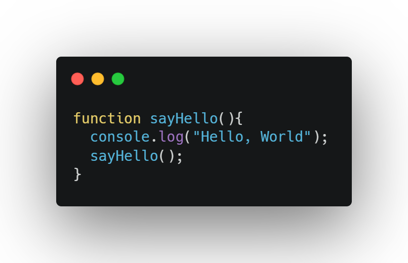
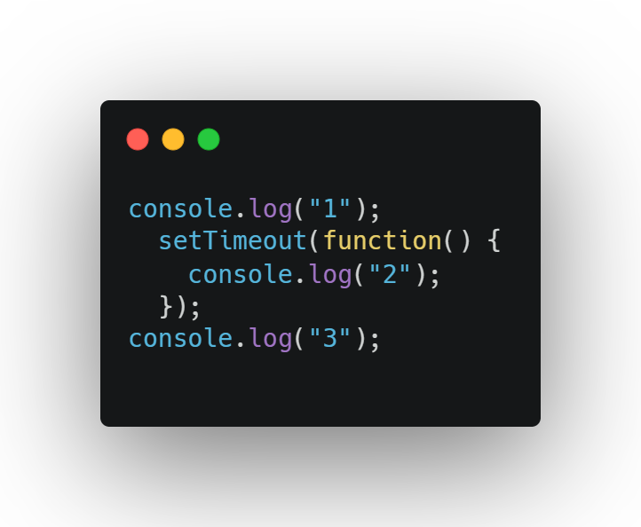
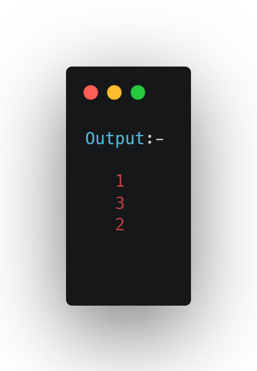

How JS works?
 5 min. read
5 min. read
Everyone loves Javascript,Ain't that right!!!.But have u ever wondered how javascript works under the hood?What happens to the code which u write in your favourite text-editor and then surprisingly it works all well in the browser when executed.Want to know more about it?
So Let's get started!!!
First let's figure out what happens with your code when you execute in your browser.The code which you write is not understandable by your browser.The code is in 0's and 1's that's why browser is not able to recognize it.So how does it work in the browser??? There is a tool called Javascript Engine. Javascript Engine helps run your code in browser.Every broswer has their own Javascript Engine, like Chrome has Chrome's V8 Engine. Internet Explorer has Chakra.Mozilla Firefox has SpiderMonkey and so on... But most used Javascript Engine is Chrome's V8 engine.
Okay! So now we know how Javascript works in the browser.But what's inside this Javascript Engine 🤔. Let's find out.

So ever heard of memory leak? A memory heap has limited space. When you have too much of unused memory that you dont't use up, the space gets filled.You must have heard of stackoverflow!!!. Well that's when your call stack overflows, as it also has limited space. Here’s an example of stack overflow.
Here sayHello function is called repeatedly, hence overflowing the stack.
Javascript is single-threaded language, which means it has only one call stack and therefore it can execute just one task at a time.
Wait I have heard that Javascript is Asynchronous then how is it we call it single-threaded?Let's take an example of setTimeout function.setTimeout is asynchronous and it is given to us by Web API's(it provides us many other API's), so technically setTimeout is not a part of Javascript.Let’s take an example to understand this.
 First 1 get’s printed and then 3 followed by 2.
What happens behind the scenes is that Javascript engine first uploads the first console log statement into the call stack, and waits for it to get executed. Once done it gets popped out and then setTimeout gets uploaded to the call stack. It then asks WebAPI to provide it with setTimeout method. While in the meantime it’s waiting for WebAPI to provide it with setTimeout API, call stack removes setTimeout from it and uploads the last console statement and executes it. Meanwhile WebAPI has sent us a callback. This callback is then sent to callback queue. This queue basically keeps track of all callbacks that need to be executed.
Now there’s something called event loop which keeps checking if the stack is empty. Well now it’s empty so event loop will take the callback from callback queue and put it in the call stack. Once done, the console log statement inside the setTimeout function get’s executed.
Recap of the setTimeout
- Pushed to stack
- Passed to WebAPI
- Waits for sometime
- Pushes callback to callback queue
- Event loop checks if stack’s empty and pushes to stack.